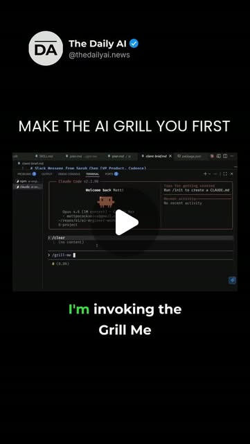

Instagram Reel

Before you let an AI coding agent write the plan, Matt Pocock’s move is to...
video transcript (enriched by ClaudeClaw)
Summary
[CAPTION]
Before you let an AI coding agent write the plan, Matt Pocock’s move is to make it interview you first.
In this clip, he invokes a tiny “Grill Me” skill in Claude Code, passes in the client brief, and keeps the context focused: just the skill plus the thing he wants to build.
[CAPTION]
Before you let an AI coding agent write the plan, Matt Pocock’s move is to make it interview you first.
In this clip, he invokes a tiny “Grill Me” skill in Claude Code, passes in the client brief, and keeps the context focused: just the skill plus the thing he wants to build. The goal isn’t a polished document yet. It’s alignment.
The useful shift: stop asking the model to rush into “poof, plan.” Make it walk the design tree, ask one question at a time, offer its recommended answer, and reach a shared understanding before implementation starts.
#AICoding #AIAgents #ClaudeCode
[VIDEO]
I'm invoking the grill me skill. And what I'm going to do is I'm going to say grill me and I'm going to pass in the client brief. So now the LLM really has only a couple of things here. It just has the skill and it has the description of what I want to do. And this is virtually how I start every piece of work with AI. And while it's exploring the code base, I'm just going to show you what the grill me skill does. So this is inside the repo, so you can check it out. It's extremely short. Interview me relentlessly about every aspect of this plan until we reach a shared understanding. Walk down each branch of the design tree, resolving dependencies one by one, for each question, provide your recommended answer. Ask the questions one at a time, blah blah blah. What this does, and what I noticed when I was working with AI, especially in plan mode, actually, is it would really eagerly try to produce a plan for me. It would say, okay, I think I've got enough, I'm just going, poof, plan, plan. And what I found was that I was really trying to find the words for this, for what I wanted instead of that. And Frederick P. Brooks in The Design of Design, he has a great quote talking about the design concept. When you're working on something new with someone, when you're all trying to build something together, then there's this shared idea that's shared between all participants, and that is the design concept. And that's what I realized I needed with Claude. I needed, I needed to reach a shared understanding. I didn't need an asset, I didn't need a plan, I needed to be on the same wavelength as the AI, as my agent. And this is an extremely effective way of doing it.
View original on Instagram Reel →